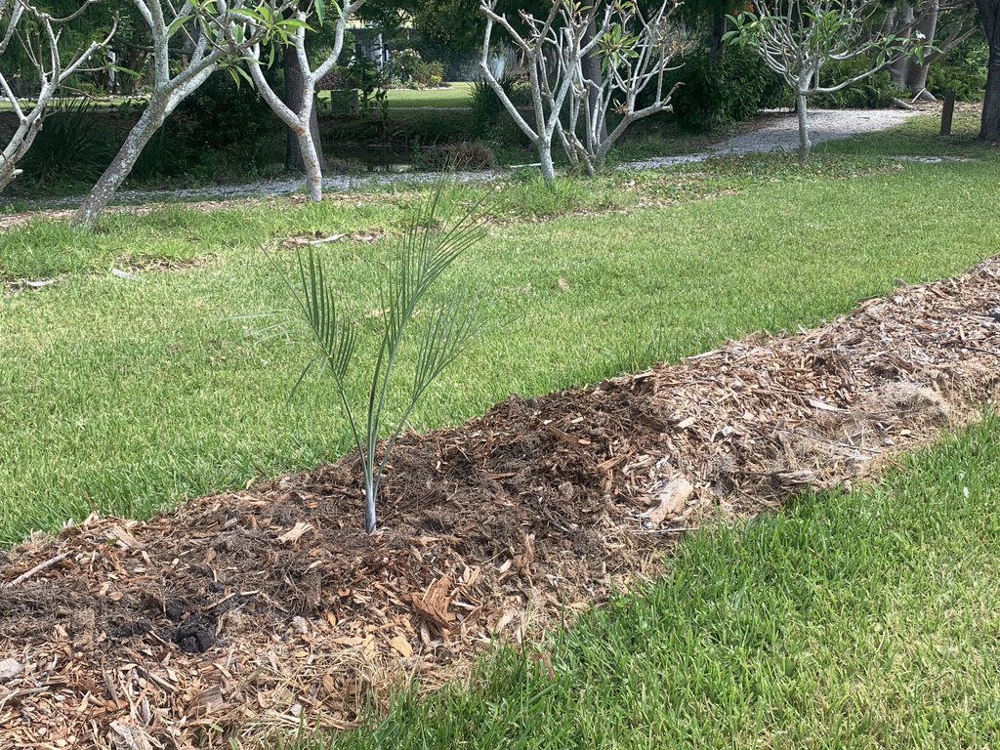

- One of the rarest palms in the United States — the Elliott Key population — the last in Florida — numbers fewer than 50 individuals.
- Its blue-gray fronds shimmer silver on the underside, and clusters of bright red berries ripen throughout the year, giving rise to its alternate name Cherry Palm.
- Every wild specimen lost to collectors is irreplaceable; every one growing in cultivation is a conservation choice someone made.
- Virtually pest-free and one of the most ornamental fruiting palms you'll encounter.
Native to the northern Caribbean, eastern Mexico, Belize, and extreme southeast Florida. In the United States it is critically endangered, historically found only on Elliott Key, Long Key, and Sands Key in the Florida Keys. First formally documented in the USA in 1886.
- What wiped out the Long Key population of Buccaneer Palms? Gardeners. In the early 20th century, collectors dug and sold the entire wild colony as ornamentals, erasing a natural population that had existed for thousands of years. The palms on Elliott Key — now the last wild Florida population — survived partly by accident, partly by inaccessibility.
- Today fewer than 50 wild adult specimens remaining there. It takes a Buccaneer Palm roughly 14 years just to reach reproductive maturity in cultivation with irrigation and fertilizer; in the wild, longer. Every specimen growing in a botanic garden collection is, in a very real sense, a vote against that history repeating itself.
The Buccaneer Palm's nectar-rich flowers are a reliable draw for bees — a meaningful pollinator resource in the sparse coastal hammock habitat it calls home.
Its seed dispersal strategy is remarkable: the fruits become buoyant when dry and can be carried by ocean currents between islands — a fitting trick for a palm that colonizes rocky Caribbean coastlines.
The bright red berries are a year-round display that strongly attracts fruit-eating birds, and every healthy specimen in cultivation represents a genuine conservation contribution.
Seed only — no suckering or vegetative reproduction. Fruits become buoyant when dry and may be dispersed by ocean currents between islands.
Small yellowish flowers borne on branched inflorescences up to 1 meter long, emerging below the crown and appearing year-round.
Distinctive globular red berries up to 1.7 cm in diameter, often 2 or 3 lobed depending on how many seeds mature, turning bright red at full maturity.
One large seed per lobe inside each berry.
Solitary trunk ringed with prominent circular leaf scars, sometimes slightly swollen at variable points — resembling a miniature Royal Palm. Fronds are blue-gray above and shimmer silver on the underside.
The ringed trunk is the first thing to notice — prominent circular leaf scars stacked like rings on a slightly swollen trunk that resembles a miniature Royal Palm.
Run your eye up to the fronds: the blue-gray upper surface and silver-shimmering underside are unlike any other palm in the park. Watch for branched flower stalks emerging below the crown, and the striking clusters of bright red fruit that can appear at any time of year.
The bright red berries aren't reliably edible, and the fruit skin carries calcium oxalate crystals that can irritate sensitive skin. It isn't a food source.
It isn't considered significantly toxic, and there's no specific toxicity data for dogs.
PSBP specimen is nursery-grown and planted here in 2023.
- © Randall Carter (CC-BY-NC), via iNaturalist